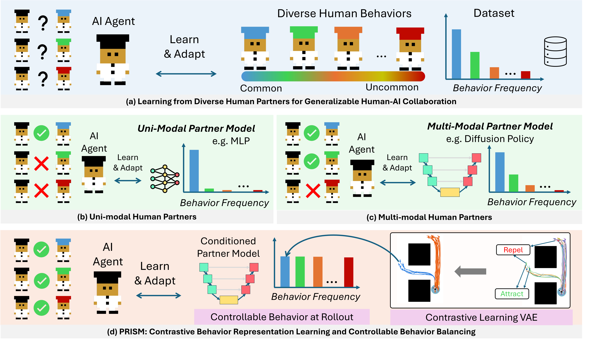
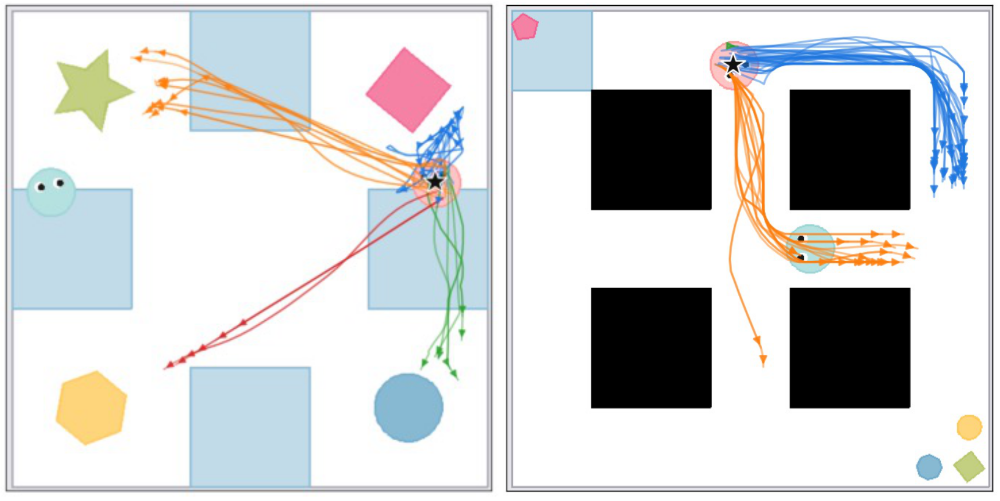
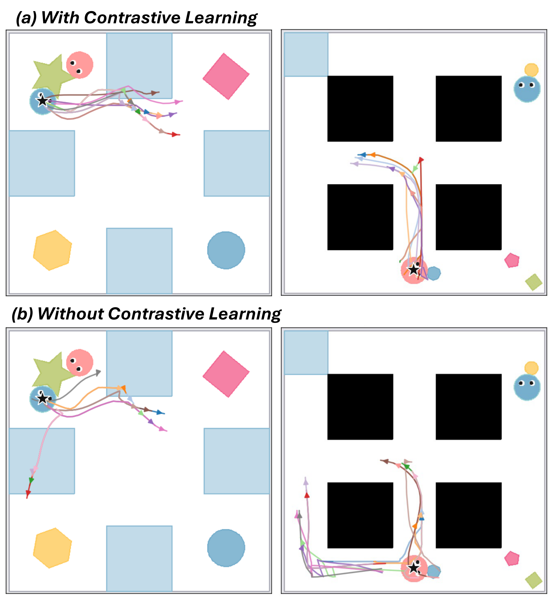
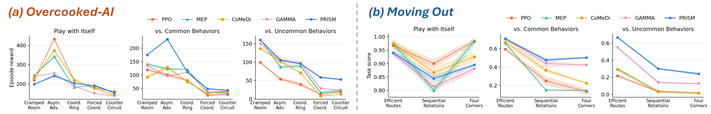

AI agents that collaborate with humans must handle diverse human behaviors, including behaviors that appear only rarely. Since training with real humans in the loop is slow and costly, agents learn instead with models of human behavior trained on demonstrations. However, such partner models inherit the behavior-frequency bias of the dataset, so rare but valid behaviors almost never appear. We argue that a partner behavior model should be controllable, so that its behavior distribution can be chosen at rollout time. We introduce PRISM, a controllable partner model that separates the behaviors mixed together in unlabeled demonstrations. PRISM learns a behavior latent space with a contrastive variational autoencoder, treating action chunks that start from similar states but move toward different goals as different behaviors. It then conditions a diffusion policy, chosen for its ability to model multi-modal distributions, on the learned behavior latents. At rollout, we control the behavior distribution, so the AI agent learns to cooperate with common and uncommon behaviors. Experiments in Overcooked-AI and Moving Out, and a human study, show that PRISM covers behaviors more evenly and improves collaboration with unseen partners and real humans.

From nearly the same state (the black star), human players move toward different goals, and some of these choices are far rarer than others. A behavior is therefore defined by where a short action chunk leads, not by where it starts.
A contrastive learning VAE encodes each action chunk into a behavior latent. Beyond reconstruction, a contrastive term pulls together chunks that start from a similar state and reach a similar goal, and pushes apart chunks that share the state but head elsewhere. Latent distance then measures behavioral difference rather than trajectory shape.
A diffusion policy is conditioned on this latent. At rollout, we retrieve the behaviors that humans actually performed near the current state, and among them we pick the one most unlike everything played so far. Rare behaviors are reached quickly, instead of appearing at their data frequency.

Each panel encodes one anchor state (black star) and draws the action chunks whose latents are closest to it. (a) With the contrastive term, latent neighbors share both a similar state and a similar behavior, so one neighborhood is one behavior. (b) Without it, chunks heading in different directions from the same state fall into the same neighborhood, and conditioning on such a latent no longer selects a single behavior.

We split the human demonstrations into two halves. The agent trains with a partner model built on one half, which shows the common behaviors, and is evaluated with a held-out proxy built on the other half, which shows uncommon behaviors it never saw. With common behaviors, PRISM is best or tied on most maps. With uncommon behaviors the gap becomes large, and PRISM roughly doubles the best baseline on the two hardest Overcooked-AI layouts and on two of the three Moving Out maps.
Asymmetric Advantages. Each row is one trained AI agent, and each column is one partner it plays with. In the two human-proxy columns, the green chef is the human proxy and the blue chef is the trained AI agent. The number under each video is that episode's return.
reward 440
reward 180
reward 120
reward 260
reward 100
reward 80
reward 280
reward 280
reward 220
Playing with itself only measures whether an agent can run the task with a copy of its own conventions, and the baselines score well there. What matters is the two human-proxy columns, where PRISM keeps its score while the baselines drop.
Two agents carry objects into the blue goal region. The blue agent is the trained AI agent and the pink agent is its partner. The number under each video is the delivery score of that episode, the fraction of the objects brought into the region.
score 0.75
score 0.25
score 0.00
score 0.50
score 0.50
score 0.25
score 1.00
score 0.00
score 0.00
score 1.00
score 1.00
score 1.00
Playing with itself, GAMMA scores at least as well as PRISM. With the proxies the ordering flips. PRISM delivers more on both maps, and on Sequential Rotations it delivers everything with both proxies while GAMMA delivers nothing.
@article{kang2026prism,
title={Learning Controllable Human Behavior Models for Human-AI Collaboration},
author={Kang, Xuhui and Zhuang, Yan and Wang, Yuyan and Ping, Yi and Kuo, Yen-Ling},
journal={arXiv preprint arXiv:XXXX.XXXXX},
year={2026}
}